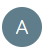
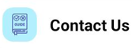

| Topics |
|---|
| Overview |
| Purpose |
| Version Control |
| Glossary |
| Mobile Application |
| - Download and Installation |
| - Creating Your Account |
| - Let's Start Your, YourPal - Aapki Sehat Ka Sathi |
| - Dashboard |
| - Vital's Reading (Blood Pressure Monitoring / Blood Glucose Monitoring) |
| - Health |
| - Courses |
| - Rules |
| - Patient Medical History |
| - Patient's Medical Notes |
| - Adherence Report |
| - Consultation |
| - More |
| Frequently Asked Questions (FAQ) |
| - How do I download and install the app on my device? |
| - What information do I need to create an account? |
| - Can I use the app on multiple devices? |
| - How can I update my personal information in the app? |
| - Can I change or update my registered mobile number? |
| - How do I connect health Monitoring devices (e.g. Blood Pressure Monitor, Glucose Meter)? |
| - How to take Blood Pressure Readings? |
| - How to take Blood Glucose Monitoring? |
| - Can I view historical health data and trends? |
| - How to check the tabular from of my readings? |
| - Where can I find information about the Courses assigned to me? |
| - How do I set up reminders for Courses sessions? |
| - How is my health information protected in the app? |
| - What measures are in place to ensure the privacy of my information? |
| - What should I do if I encounter technical issues with the app? |
| - What are the terms and conditions of using the Application? |
| - What is an Adherence Report? |
- Overview
- Purpose
- Version Control
- Glossary
- Vital : Vital is an essential body function like blood pressure, pulse, blood glucose, etc.
- Course : A course is a doctor-defined period with a collection of mandates that a patient must follow. The duration of the course will be in days. Although the YourPal application comes with eight pre-defined courses, a doctor can create as many courses as per their needs.
- Mandate : It is a doctor prescribed time duration during which the patient needs to take his or her vital readings. The duration of a mandate will be in hours.
- Status of a Course : Whenever a course is assigned to a patient, the status of that the course becomes active for that patient.
- Inactive Course : Once the course’s duration is over, it automatically becomes inactive or if the doctor assigns another course, the previous course will become inactive.
- Rule : In the YourPal application, a doctor creates a rule that governs to which stage a reading belongs. The YourPal application has three different rules for each vitality - Blood Pressure, Pulse, and Blood Glucose.
- Reading : The process of measuring Blood Pressure or Blood Glucose using the Yourpal provided devices and recording/syncing the result with the YourPal mobile application is known as reading.
- Alerts : Every reading is categorized in a stage by the applicable rule set by the doctor. If a reading is not categorized in the ‘Normal’ stage then a notification gets generated for the doctor. This notification is referred to as an ‘Alert’. Every time an abnormal reading is recorded in the YourPal application, it generates an alert (notification) for the doctor.
- Active Alerts : Every alert is labeled as an ‘Active Alert’ by the application. This is done to ensure that the doctor investigates, discusses and acknowledges the underlying reason for every abnormal reading recorded by the application.
- Resolved Alerts : At times, the doctor may find an insignificant reason that resulted in an alert. In such scenarios, the doctor can resolve the ‘Active Alert’ as a sign of a follow-up.
- Compliant : If a patient takes all his or her readings within the mandated timing as prescribed by his/her doctor, then the patient is said to be compliant.
- Non - Compliant : If a patient fails to take readings within the mandated timing prescribed by the doctor, then the patient is said to be non-compliant.
- Mobile Application
- Open the App Store on your iOS device.
- Search for 'YourPal'.
- Click "Download" and wait for the installation to complete.
- Open the Play Store on your Android device.
- Search for 'YourPal'.
- Click "install" and allow the app to download.
- Open the YourPal Application.
- Enter your registered mobile number to login to the application. Your registered mobile number is the mobile number the doctor used to create your account earlier.
- Click on the 'Get OTP'.
- Enter the OTP you have received on the mobile number registered to access your account.
- Health
- Courses
- Rules
- Doctors Notes
- Medical History
- Adherence Report
- Consultation
- More
YourPal
Mobile App provides remote monitoring support for patients, connecting them with healthcare professionals and their support teams. Within the mobile app, patients can access features such as managing their accounts, viewing courses and rules assigned to them, checking prescriptions, and receiving alerts based on their readings. The app ensures a seamless and efficient experience for patients.
This document is designed to guide patients through the various functionalities available within the mobile application. It serves as an informative resource, outlining the different modules accessible through the app. This document is intended to help patients navigate and understand the features offered in the mobile application.
| Sr. No | Document Title | Version | Description |
|---|---|---|---|
| 1. | YourPal - Mobile Application Manual | 1.0 | Information and steps for different functionalities available in the application. |
Download and Installation
Option 1
You can download the YourPal mobile application by scanning the QR code available on the side panel of the device/monitor’s box. This will automatically detect your operating system (Android/iOS) and direct you to the respective store page for the application.
Option 2
iOS Users
Android Users
Login to Your Account
Dashboard
The Dashboard is your central hub for health information, featuring summaries of vital data and quick access to important features.
On the Dashboard screen,you can easily view and manage your personal details, such as name, gender, age, height, and weight, by clicking on the Profile Icon at the top of the screen. The Alert Icon located in the top right corner, notifies you of Missed Vitals and Alert Counts. Just below this , the Readings section provides essential information, including blood pressure and blood glucose, covering aspects like course compliance, last reading details, course duration, and activity status. Further down the screen, you will find sections for Active Consultations and Medicine Reminders, along with a convenient "Take Reading" option. At the bottom of the screen, four modules offer additional functionalities to enhance your experience.
Vital's Reading
You can view your readings in this section, where you can have access to both your Vital Reading.
a.) Choose Vital `Blood Pressure` or ` Blood Glucose` as per requirement.
b.) By default, the reading trend displayed will be as per your last assigned course.
c.)
Click on the
 to open the drop down menu to change the duration filter.
to open the drop down menu to change the duration filter.
d.) Click on the to view your monthly Readings per Vital’s.
e.) Click on to view your readings date wise.
f.) You can also view your reading in Tabular form by clicking on
g.) Cilck on to view the donut chart of your readings.
h.) Cilck on this button to view your readings’ trend.
i.) Cilck on this button to view all the consultation notes.
j.) Cilck on this button to download your summarized and detailed report.
This is your Health Section Overview screen, displaying all the health monitoring features available in the mobile application. On this screen, you can access essential information such as your Courses, Rules, Doctors Notes, and Medical History and Adherence Report. It provides a comprehensive snapshot of your health-related data.
A course is a doctor-defined period with a collection of mandates that a patient must follow. All the courses assigned to you can be seen on this screen. Details like number of mandates, timing of each mandate, course duration, course start and end dates, etc., can be seen here.
Patient Rules are the guidelines that are used to analyze a patient's readings to determine the stage every individual reading belongs in. These rules are set by your doctor. Clicking on the Rules button will show different rules set by your doctor.
Notes are a brief record of points related to a patient's readings, diagnosis, treatment, etc., written by the doctor. Here you can see all your consultation notes created by your doctor.
Medical History reveals the illnesses found in the patient's medical records. These records are either provided by the patients through the YourPal mobile application or added by the doctor from the Web portal. Similarly, records related to the Social History and patient’s Family Medical History can be accessed from here.
The Adherence Report in the mobile application provides a comprehensive view of the patient's medication history. It displays both missed and taken medicines, allowing users to keep accurate records of their medication. Patients can easily update the status of each medication as either ‘Taken’ or ‘Missed’ directly within the report.
You can view all the Consultation issued by your doctor on this screen. Consultations for different vitals are available under the relevant tab. You also have the option to download these Rx.
Privacy Policy: Discover how YourPal safeguards your health data with a focus on confidentiality and security.
Terms & Conditions: Understand your rights, responsibilities, and the agreement between you and YourPal.
User Manual: Your comprehensive guide for using YourPal efficiently, offering step-by-step instructions and tips.
Contact Us: Easily connect with us for queries, technical issues, or feedback; we're here to support you.
Logout: Use this button to log out.
How to?
Q. How do I download and install the app on my device?
- Visit your device's app store, search for "YourPal," and click on the "Install" button.
- Now Give the permission required.
- Add your register number to get OTP.
- Submit your OTP and enter in Yourpal App.
Q. What information do I need to create an account?
- Your doctor will register your account; you only need to log in with the registered mobile number.
Q. Can I use the app on multiple devices?
- Yes, you can use the app on multiple devices. But the suggestion is to login only in one device at a time.
Q. How can I update my personal information in the app?
- Open the app and you’ll land on the dashboard.
- To edit your account information click on  to land on your account profile.
-
To edit your account information click on
Q. Can I change or update my registered mobile number?
- Yes, you can contact your doctor to update your registered mobile number.
Q. How do I connect health monitoring devices (e.g., blood pressure monitor, glucose meter)?
- Follow the device's instructions and pair your devices with the "Take reading" section in the app.
Q. How to take Blood Pressure Reading?
- Wear the monitor’s cuff as per the instructions mentioned on it.
- Open the YourPal Application.
-
Click on
- The application will ask your permission to access the device's location (GPS), Bluetooth, etc. Kindly ensure that you provide the requisite permissions for smooth functioning of the application.
-
Read the instructions shown on the screen and click on
- Your blood pressure monitor will connect with the YourPal application and the reading from your monitor will get synced on the YourPal application.
Q. How to take Blood Glucose Monitoring?
- Take Glucometer and follow the instruction given on it.
- Open the YourPal application.
-
Click on
- The application will ask your permission to access the device's location (GPS), Bluetooth, etc. Kindly ensure that you provide the requisite permissions for smooth functioning of the application.
-
Read the instructions shown on the screen and click on
- Insert a test strip into the meter and follow the instructions provided.
- Your Glucometer will connect with the YourPal application and the reading from your monitor will get synced on the YourPal application.
Q. Can I view historical health data and trends?
- Open the YourPal Application.
- Click on the vital card whose trend you wish to view
- The trend displayed on the screen is for the course duration.
-
Click on
to view donut chart for the selected duration
- Click on to view donut chart for the selected duration.
- Click on to view readings for the selected duration in a tabular format.
Q. How to check the tabular form of my reading?
You can review your vital readings in different formats using these options:
-
Click on this button to see the trends of your readings.
-
Click on this button to view the pie chart (Donut) representation of your readings.
-
Click on this button to view readings for the selected duration in a tabular format.
Q. Where can I find information about the courses assigned to me?
A. Access your assigned courses in the "Courses" section for detailed information.
Q. How do I set up reminders for course sessions?
A. You will receive push notifications as reminders. However, you cannot set up push notifications for the reading mandates on your own. Only your doctor can set reading reminders for you. Kindly contact your doctor to set these push notifications.
Q. How is my health information protected in the app?
A. Your health information is safeguarded using encryption and secure access controls.
Q. What measures are in place to ensure the privacy of my information?
A. Stringent security measures, such as encryption and access controls, are implemented for your data privacy.
Q. What should I do if I encounter technical issues with the app?
-
Click on 
-
Click on to contact the support team of YourPal.
-
Call Us: +91 - 9773306267
Q. What are the terms and conditions of using the application?
A. Refer to the ‘Terms & Conditions’ section under ‘More’ for further information.
Q. What is The Adherence Report?
A. An Adherence Report is a feature in a health or medication management system that tracks and records a patient's medication usage. It provides insights into how consistently a patient is following their prescribed medication regimen. Key elements typically include: